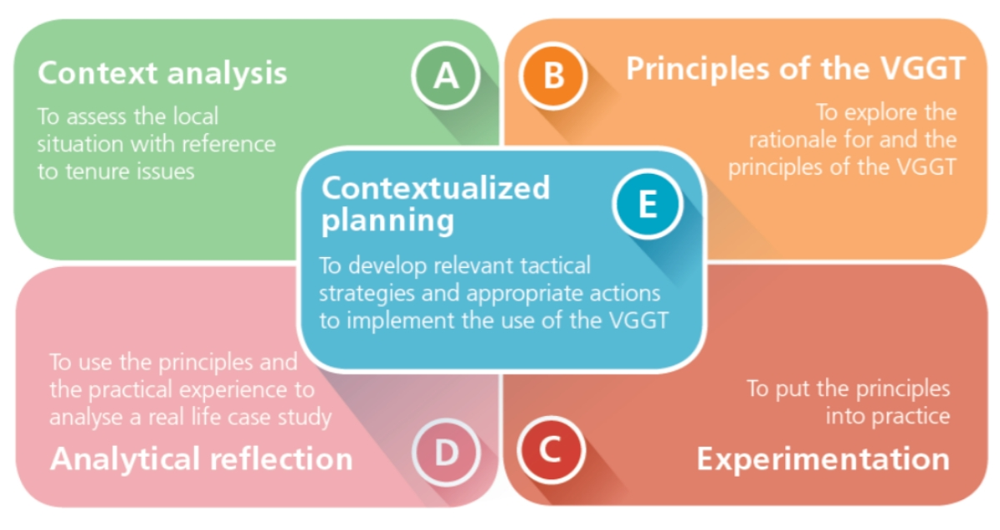

THE FIVE ELEMENTS OF THE METHODOLOGY
The methodology of this training has been designed based on a modified experiential approach learning cycle: the learning process starts from the learners’ experiences and gradually builds their knowledge through five main elements (each element
feeding into the next one). Furthermore, it has been designed in a modular way, where trainers can select the specific elements they need.

Click on each element to discover more.
The content of your modal.
Context analysis: This is the foundation of the whole training, on which all other elements will build on. Participants share tenure-related cases that they know of, or have experienced, and that represent a challenge for
them and their communities. Once all participants have shared their cases,they will select in plenary 2-3 cases that best represent the main tenure challenges of their country.
Principles of the VGGT: After analysing the context, participants explore the rationale and the principles of the Voluntary Guidelines, which will strengthen their knowledge on how the Voluntary Guidelines can support them
in implementing a responsible governance of tenure of land, fisheries and forests in the local context.
Experimentation: In this element, participants put the principles into practice by directly applying inrole-play situations what they have learned.
Analytical reflection: Through the analytical reflection, participants gain a common understanding on the tenure governance in their country. Then, they use the principles of the Voluntary Guidelines and their practical experience
in the role-play to analyse the case studies that they have selected in the context analysis.
Contextualized planning: Finally, participants have the opportunity to contextualize what they have learned, and to develop an action plan tailored to their organization.